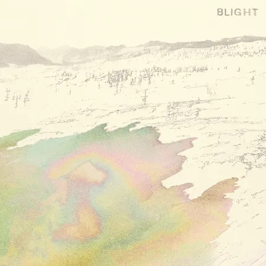

These are a few music artists I could listen to on repeat without ever getting bored of them.
This page uses a complementary color scheme with a dark umber (#802704) and deep champagne (#e4ae6b) as the main colors.
I chose a complementary color scheme because I wanted to invoke a sense of comfort and warmth. The umber conveys stability and serenity, while the deep champagne adds elegance and refinement. The neutral background (be4c22) keeps the page from feeling overwhelming.



| Names | Instrument | Band |
|---|---|---|
| Peter Silberman | Guitar and Vocals | The Antlers |
| Cliff Sarcona | Drum Kit | As Tall As Lions |
| Shay Lewis | Vocals | Artificial Language |